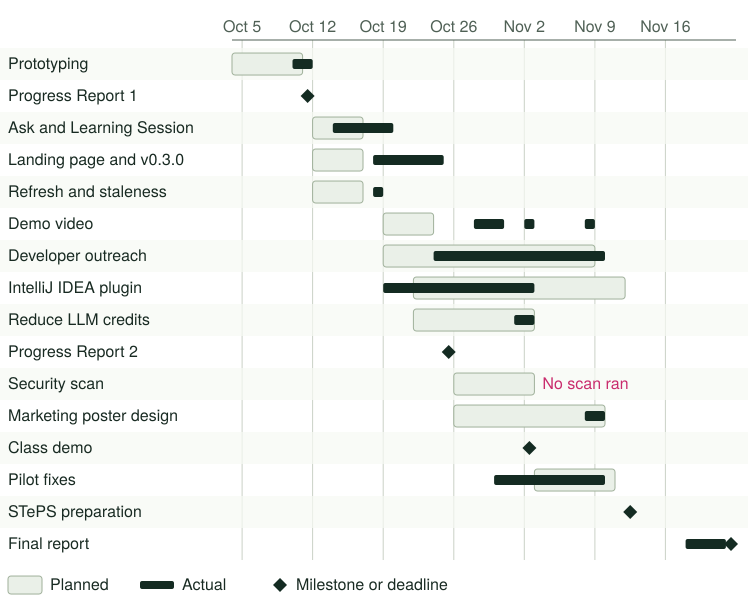

3 Milestones and timeline
3.1 Planned and actual timeline

3.2 Milestones hit and missed
HitLateMissed
| Milestone | Note |
|---|---|
| Interviews & Prototyping Initial understanding of the problem space | Interviewed 5 students on their coding habits. Based on the findings and our own opinions, we vibe-coded a few variations before finalising on one idea. |
| Progress Report 1 Prototype, customer contact report & prototype feedback | v0.1.0 prototype is an VS Code extension that generates diagrams with backlinks to code. |
| Learning Session feature Guided task mode, aim to allow users to understand codebase better. | The feature is broken down into: Ask, code tours, explain-back and bug hunt sessions. |
| Landing page Marketing material preparation. | Launched aisus.dev landing page together with v0.3.0 extension. |
| Diagram version control Allow versioned diagrams so that the users can visualize the changes. | Took many iterations to refine the experience: Code-freshness badge; Show changes UI interface; Diagram comparison; Change summary panel; /aisus-plan: visualize AI's spec plan in a diagram. |
| Demo video Show users the features of aisus. | Vid 1: A tutorial on generating diagrams, we didn't use it because it is too dry. (link). Vid 2: An onboarding video for the interviewees and class demo Vid 3: STePS promotional video (best promotional video!). |
| Developer outreach understanding user's need | The team contacted six developers and interviewed them about their experience with aisus, as section 6 describes. . CS2103 evaluation pilot. (dropped, cs2103 students had finished their projects) |
| IntelliJ IDEA plugin Prepared for cs2103 cohort. | The plugin generates maps, opens cited code and reviews changes. Its feature set isn't as complete as VS code. |
| Reduce LLM credits Reduce cost while maintaining accuracy. | It is a hard problem. An agent that reads less can miss the code a box should cite, and finding the balance needs deeper research than the schedule allowed. |
| Progress Report 2 Competitor analysis; Project iteration feedback; Marketing plans | Explored cloud features to allow users to collaborate. Shifting focus to product marketing and distribution via different media channels. |
| Security scan Prevent code leakage and unintended code execution. | No security tests ran, because the team lacked the security expertise. The safety rules built into v0.3 keep writes inside the repository, let agents run only pre-approved commands, and cover prompt injection and secrets. |
| Class demo Prepare the demo and pitch. | v0.3.3 released. |
| Marketing poster design Project infographics. | Designed and distributed flyers in SoC. |
| Pilot fixes Resolve critical usability issues raised by the users. | Incremental fixes throughout the last two weeks. v0.3.4 released |
| STePS preparation | aisus presented its poster and its video at STePS, and won best promotional video. |
| Final report | Submit the final report before Nov 22. |